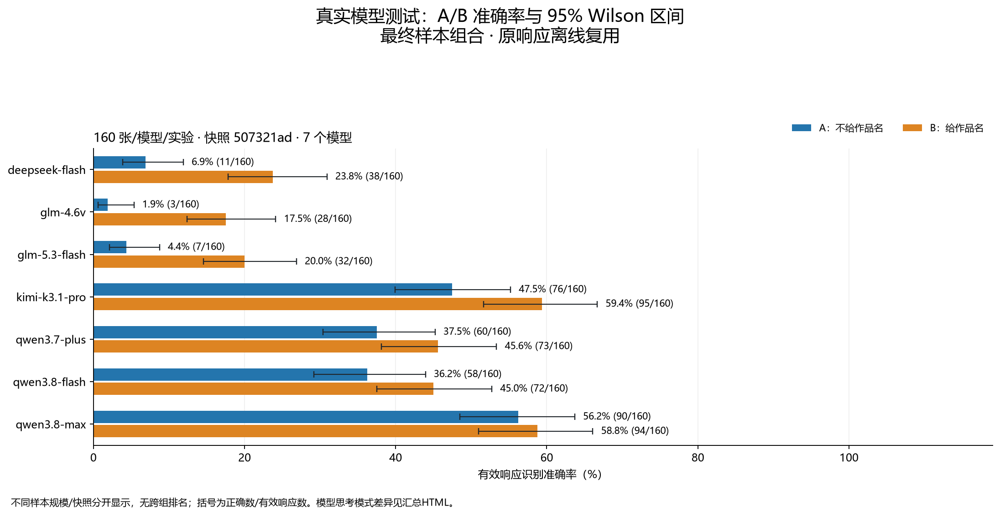

7个完整模型，每部40张、四部160张、A/B合计2240条最终任务。统计值与原来源哈希保持原样；完整快照和额外审计截图保留本地。仓库中的最终160张图与完整清单可直接使用。
生成于 2026-11-13 09:57:45（北京时间）。仅读取下方明确列出的运行；未自动混入其他诊断或预检。
下载模型对比CSV · 查看完整汇总JSON · 打开准确率图

评估标签快照 507321ad831ac96b014074d030a13673；提示词 v1。纳入对比的模型已执行 2240/2240 次计划请求。
| 模型 / 实际版本 | 样本数 每实验 | A 准确率 正确/有效 · 95% CI | B 准确率 正确/有效 · 95% CI | API失败率 A / B | 接口均值 / P95 秒 | 已记录 tokens A+B | 模式 / 来源 |
|---|---|---|---|---|---|---|---|
| deepseek-flash deepseek-flash × 320 | 160 | 6.9% 11/160 3.9%–11.9% | 23.8% 38/160 17.8%–30.9% | 0.0% / 0.0% 失败数 0 / 0 | 1.15 / 1.55 320 条任务记录 | 292,213 输入 276,920 输出 15,293 未返回usage 0 条 | 关闭思考 run_20261113_final_practical |
| glm-4.6v glm-4.6v × 320 | 160 | 1.9% 3/160 0.6%–5.4% | 17.5% 28/160 12.4%–24.1% | 0.0% / 0.0% 失败数 0 / 0 | 2.65 / 4.23 320 条任务记录 | 535,969 输入 520,200 输出 15,769 未返回usage 0 条 | 关闭思考 run_20261113_final_practical |
| glm-5.3-flash glm-5.3-flash × 320 | 160 | 4.4% 7/160 2.1%–8.8% | 20.0% 32/160 14.5%–26.9% | 0.0% / 0.0% 失败数 0 / 0 | 4.25 / 7.42 320 条任务记录 | 555,570 输入 531,560 输出 24,010 未返回usage 0 条 | 思考 low（不可关闭） run_20261113_final_practical |
| kimi-k3.1-pro kimi-k3.1-pro × 320 | 160 | 47.5% 76/160 39.9%–55.2% | 59.4% 95/160 51.6%–66.7% | 0.0% / 0.0% 失败数 0 / 0 | 15.51 / 32.70 320 条任务记录 | 641,724 输入 560,040 输出 81,684 未返回usage 0 条 | 思考 low（不可关闭） run_20261113_final_practical |
| qwen3.7-plus qwen3.7-plus × 320 | 160 | 37.5% 60/160 30.4%–45.2% | 45.6% 73/160 38.1%–53.4% | 0.0% / 0.0% 失败数 0 / 0 | 2.15 / 2.59 320 条任务记录 | 436,627 输入 414,160 输出 22,467 未返回usage 0 条 | 关闭思考 run_20261113_final_practical |
| qwen3.8-flash qwen3.8-flash × 320 | 160 | 36.2% 58/160 29.2%–43.9% | 45.0% 72/160 37.5%–52.7% | 0.0% / 0.0% 失败数 0 / 0 | 1.60 / 2.08 320 条任务记录 | 431,812 输入 414,160 输出 17,652 未返回usage 0 条 | 关闭思考 run_20261113_final_practical |
| qwen3.8-max qwen3.8-max × 320 | 160 | 56.2% 90/160 48.5%–63.7% | 58.8% 94/160 51.0%–66.1% | 0.0% / 0.0% 失败数 0 / 0 | 5.10 / 23.11 320 条任务记录 | 477,507 输入 414,160 输出 63,347 未返回usage 0 条 | 关闭思考 run_20261113_final_practical |
接口的“型号不存在或无权限”结果不用于推断全部账号的服务状态，也不计为角色识别错误。
校验限制：Historical raw requests contain image_meta, not image digests. Image reuse is checked against source snapshot paths/bboxes and frozen SHA256 manifests; these digests do not purport to be captured at historical request time.
Final cohort (saved-response assembly)
160 张快照，2240 条已记录任务。评分指标CSV · 最终样本清单（完整元数据）（原评分快照保留本地） · 评分版本绑定 · 源运行报告 · 逐条评分CSV（截图错误页保留本地）
原输入 dataset hash: 507321ad831ac96b014074d030a13673
评分GT dataset hash: 507321ad831ac96b014074d030a13673
原输入快照 SHA256（原文件保留本地）: 541705aa6e7c07e042557ad4c4f7c51a4e31fb2ff5adb8305ef74e2e92945729
原评分GT快照 SHA256（原文件保留本地）: 541705aa6e7c07e042557ad4c4f7c51a4e31fb2ff5adb8305ef74e2e92945729
修订记录 SHA256: 未修订
metrics SHA256: 0a2a0c407293283903f2e104dd3934ac42bb62fc0a463bb4439d210e171cac06